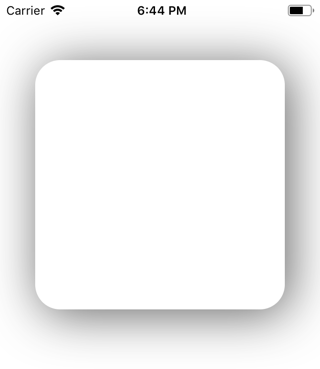

UIView with rounded corners and drop shadow?
I’ve been working on an application for a couple of years and received a simple design request: Round the corners on a UIView and add a drop shadow.To do as given below.
I want a custom UIView... : I just wanted a blank white view with rounded
corners and a light drop shadow (with no lighting effect). I can do each of
those one by one but the usual clipToBounds/maskToBounds conflicts occur.

Answer
The following code snippet adds a border, border radius, and drop shadow to
v, a UIView:
// border radius [v.layer setCornerRadius:30.0f]; // border [v.layer setBorderColor:[UIColor lightGrayColor].CGColor]; [v.layer setBorderWidth:1.5f]; // drop shadow [v.layer setShadowColor:[UIColor blackColor].CGColor]; [v.layer setShadowOpacity:0.8]; [v.layer setShadowRadius:3.0]; [v.layer setShadowOffset:CGSizeMake(2.0, 2.0)];
Swift 5 Version :
// border radius v.layer.cornerRadius = 30.0 // border v.layer.borderColor = UIColor.lightGray.cgColor v.layer.borderWidth = 1.5 // drop shadow v.layer.shadowColor = UIColor.black.cgColor v.layer.shadowOpacity = 0.8 v.layer.shadowRadius = 3.0 v.layer.shadowOffset = CGSize(width: 2.0, height: 2.0)
You can adjust the settings to suit your needs.
Also, add the QuartzCore framework to your project and:
#import <QuartzCore/QuartzCore.h>
See my other answer regarding masksToBounds.
Note
This may not work in all cases. If you find that this method interferes with other drawing operations that you are performing, please see this answer.
Suggest
The following code snippet adds a border, border radius, and drop shadow to
v, a UIView:
// border radius [v.layer setCornerRadius:30.0f]; // border [v.layer setBorderColor:[UIColor lightGrayColor].CGColor]; [v.layer setBorderWidth:1.5f]; // drop shadow [v.layer setShadowColor:[UIColor blackColor].CGColor]; [v.layer setShadowOpacity:0.8]; [v.layer setShadowRadius:3.0]; [v.layer setShadowOffset:CGSizeMake(2.0, 2.0)];
Swift 5 Version :
// border radius v.layer.cornerRadius = 30.0 // border v.layer.borderColor = UIColor.lightGray.cgColor v.layer.borderWidth = 1.5 // drop shadow v.layer.shadowColor = UIColor.black.cgColor v.layer.shadowOpacity = 0.8 v.layer.shadowRadius = 3.0 v.layer.shadowOffset = CGSize(width: 2.0, height: 2.0)
You can adjust the settings to suit your needs.
Also, add the QuartzCore framework to your project and:
#import <QuartzCore/QuartzCore.h>
See my other answer regarding masksToBounds.
Note
This may not work in all cases. If you find that this method interferes with other drawing operations that you are performing, please see this answer.